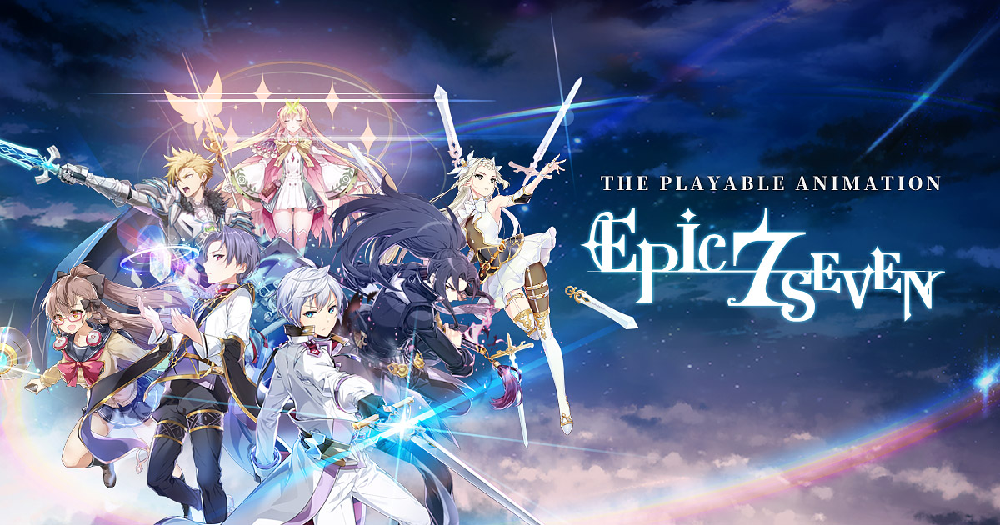

Epic Seven
Epic Seven es un juego RPG desarrollado por Smilegate Megaport, un estudio relativamente desconocido con unos cuantos títulos, tales como Chaosmasters , bajo su manga. Este juego es el primero de la empresa en tomar vuelo gracias a sus sistemas debidamente establecidos, incluyendo un combate simple pero efectivo, y unos elementos de gacha que poco castigan al usuario, y permiten superar los niveles más difíciles incluso con unidades de baja rareza. En este sentido, tenemos un juego con un combate entretenido, que no te obliga a farmear sin fin para poder desbloquear unidades que te permitan superar los mundos de la historia, y que combina todos estos elementos con un estilo de arte hermoso.
TAPSONIC TOP- Music Grand prix
Tapsonic TOP Music Gran Prix es un juego de ritmo con estética anime, que combina lo mejor de los juegos musicales de NEOWIZ, con un modo historia en el que podremos conocer a montones de personajes distintos, con los que podremos interaccionar. En la mayoría de juegos musicales, las notas que debemos tocar están fijas en la parte inferior de la pantalla. En Tapsonic TOP Music Gran Prix, sin embargo, a medida que vaya avanzando la canción, podrán ir apareciendo y desapareciendo nuevas notas. De esta forma, las canciones tienen mucho más dinamismo y ofrecen experiencias mucho más frenéticas.